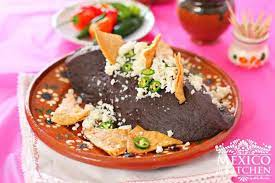

Frijoles Refritos

Descripcion de los Frijoles
Ingredientes
- frijoles
- aceite
- cebolls
- pimientos
Pasos a Seguir para los Frijoles Refritos
- Lo primero es sacar de la bolsa es los frijoles.
- Tambien hay que lavar los frijoles ya que pues vienen sucios desde el campo con todos los fertilizantes.
- Luego hay que sofreir los frijoles con la cebolla y ajo para que se vayan aromatizando todos los aromas
- Por ultimo debemos pegarle a la pana y comer de los frjoles con unos totopos bien fritos y un quesito que grantine asi ricooo.